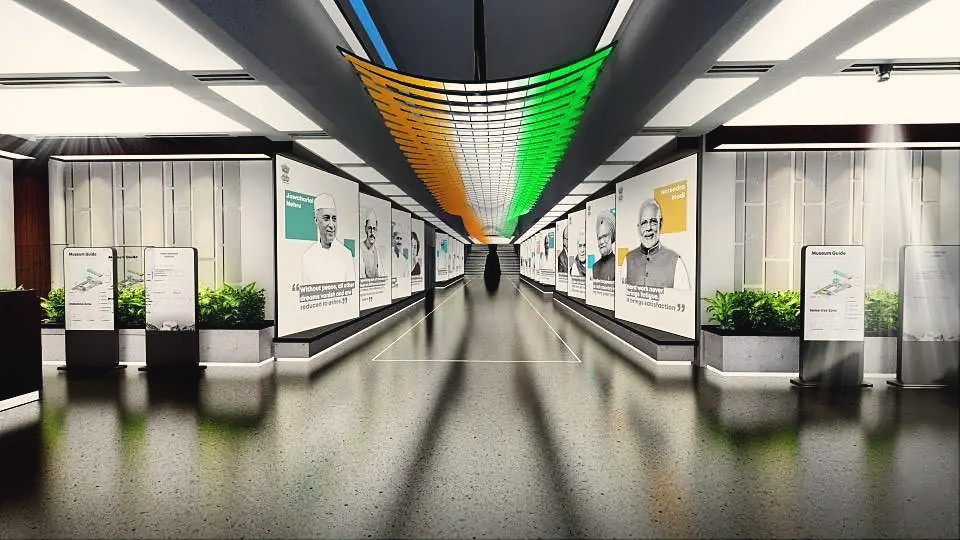
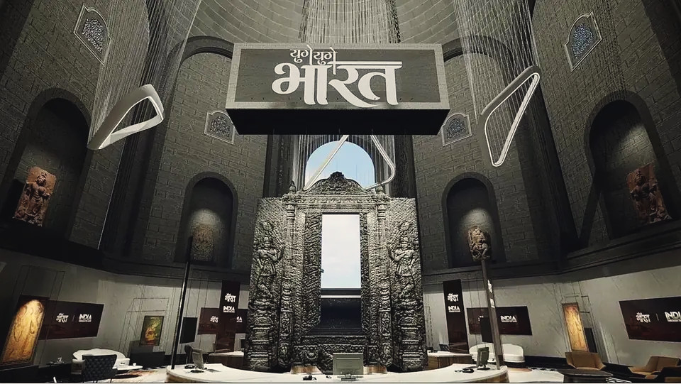

Moodboard · 001 — Overview
The lit room.
One dominant light source. Blacks that hold detail, never crushed. Highlights that lean warm, toward the lamp. A person for scale, walking in. Everything the camera sees is a room someone can enter.
- 01Expose for the light, let the rest fall to Night.
- 02Warm over cool. Never both at full strength.
- 03Backs to camera are allowed. Posed groups are not.
- 04One accent in the frame: the thing that is lit.
Gallery Black#000000
Night#0D0D0F
Charcoal#1C1C1E
Lamp Gold#E9B25A
Gallery White#F5F5F7




